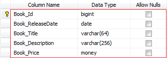
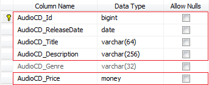
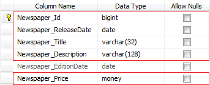

Consider the tables below.
  The inherited columns are Id, ReleaseDate, Title, Description and Price.
Create the IArticle interface in the Com.Example.Labs.Models project.
// Models | IArticle.cs namespace Com.Example.Labs.Models { using System; public interface IArticle { long Id { get; set; } DateTime ReleaseDate { get; set; } string Title { get; set; } string Description { get; set; } decimal Price { get; set; } } }
Note that the property types must be the same as thoses defined in the generated classes.
Add the IArticle interface to the Book (Book.custom.cs), AudioCD (AudioCD.custom.cs) and Newspaper (Newspaper.custom.cs) classes.
// Models | Book.custom.cs public partial class Book : IArticle { }
// Models | AudioCD.custom.cs public partial class AudioCD : IArticle { }
// Models | Newspaper.custom.cs public partial class Newspaper : IArticle { }
Add the new ArticleBusiness.cs file (Com.Example.Labs.Business/AppBusiness/ArticleBusiness.cs).
// Business | ArticleBusiness.cs namespace Com.Example.Labs.Business { using System; using System.Linq; using System.Threading.Tasks; using Com.Example.Labs.Core; using Com.Example.Labs.Models; using Com.Example.Labs.Crud; [BusinessClass] public class ArticleBusiness : BusinessBase { [BusinessMethod] public TCollection<IArticle> GetLatestArticles(IUserContext userContext, int maxRecords = 50) { TCollection<Book> bookCollection = null; TCollection<AudioCD> audioCDCollection = null; TCollection<Newspaper> newspaperCollection = null; Parallel.Invoke( new ParallelOptions { MaxDegreeOfParallelism = Environment.ProcessorCount }, () => { SearchOptions options = new SearchOptions(); options.Orders.Add(Book.ColumnNames.ReleaseDate, OrderOperator.Desc); options.MaxRecords = maxRecords; using (BookCrud db = new BookCrud(userContext)) bookCollection = db.Search(ref options); }, () => { SearchOptions options = new SearchOptions(); options.Orders.Add(AudioCD.ColumnNames.ReleaseDate, OrderOperator.Desc); options.MaxRecords = maxRecords; using (AudioCDCrud db = new AudioCDCrud(userContext)) audioCDCollection = db.Search(ref options); }, () => { SearchOptions options = new SearchOptions(); options.Orders.Add(Newspaper.ColumnNames.ReleaseDate, OrderOperator.Desc); options.MaxRecords = maxRecords; using (NewspaperCrud db = new NewspaperCrud(userContext)) newspaperCollection = db.Search(ref options); } ); TCollection<IArticle> collection = new TCollection<IArticle>(); collection.AddRange(bookCollection); collection.AddRange(audioCDCollection); collection.AddRange(newspaperCollection); return collection.OrderBy(i => i.ReleaseDate).Take(maxRecords).ToTCollection(); } } }
If this method is executed on client-side...
using (var service = new ServiceProxy<IArticleService>()) { TCollection<IArticle> articles = service.Proxy.GetLatestProducts(ClientContext.Anonymous, 5); }
... the following exception can be raised (if data is retrieved from the database).
An exception of type 'System.ServiceModel.Dispatcher.NetDispatcherFaultException' occurred in mscorlib.dll but was not handled in user code Additional information: The formatter threw an exception while trying to deserialize the message: There was an error while trying to deserialize parameter http://labs.example.com/v1:GetLatestArticlesResult. The InnerException message was 'Error in line 1 position 739. Element 'http://labs.example.com/v1:anyType' contains data from a type that maps to the name 'http://labs.example.com/v1:Book'. The deserializer has no knowledge of any type that maps to this name. Consider using a DataContractResolver or add the type corresponding to 'Book' to the list of known types - for example, by using the KnownTypeAttribute attribute or by adding it to the list of known types passed to DataContractSerializer.'.
If it is the case create the Com.Example.Labs.Contracts/Contracts/IArticleContract.custom.cs file and add the known types.
// Contracts | IArticleContract.custom.cs namespace Com.Example.Labs.Contracts { using System.ServiceModel; // IArticle Known Types [ServiceKnownType(typeof(Com.Example.Labs.Models.Book))] [ServiceKnownType(typeof(Com.Example.Labs.Models.AudioCD))] [ServiceKnownType(typeof(Com.Example.Labs.Models.Newspaper))] public partial interface IArticleService { } }
Recompile the solution and restart the WebServices. Now the WFC call should be fine.